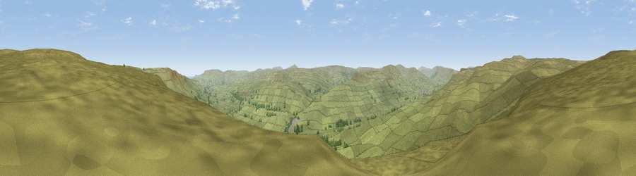

Viewpoint near Bainbridge
#12226 in England · top 31% of its area beats it · near BainbridgeWhere it is
The exact computed spot (SD 92725 92875). Click the marker for map links.
The view, rendered

A 360° render of this exact spot computed from the terrain model, tree cover and land cover — summer colours, afternoon light, calibrated against photographs of famous viewpoints. Real trees, hedges and buildings will differ in detail.
The panorama
Grey silhouette: terrain skyline in each direction (720 bearings, Earth curvature and refraction included). Dashed green: skyline with trees (+15 m) and buildings (+8 m) as obstacles. Blue strip: how far the ground is visible on each bearing.
Where the view opens
Wedge length = distance to the farthest visible ground on that bearing (vegetation-aware). Rings at 10, 25 and 50 km.
What fills the view
97% grassland · 3% woodland
Angular shares of the visible panorama (visual magnitude), not map area. Landscape diversity 0.07 (0–1 Shannon).
Key numbers
More beautiful places nearby
The staircase of upgrades: each row has a higher view potential than everything closer. Driving times are estimates from straight-line distance, calibrated against real road routing — check an actual route before setting out.
| Place | Direction | Drive | Score |
|---|---|---|---|
| Viewpoint near Askrigg | N · 2 km | ~5 min | 65.8 |
| Viewpoint near Askrigg | E · 4 km | ~9 min | 66.1 |
| Viewpoint near Askrigg | E · 4 km | ~9 min | 69.9 |
| Viewpoint near Cotterdale | WNW · 5 km | ~12 min | 74.4 |
| Viewpoint near West Witton | ESE · 14 km | ~25 min | 75.5 |
| Viewpoint near Buckden | SSE · 14 km | ~26 min | 77.3 |
| Whernside | WSW · 22 km | ~36 min | 79.9 |
| Warton Crag | WSW · 48 km | ~69 min | 83.2 |
54.33139, -2.11338 · source: screening · position refined by local search. Computed location — check access rights before visiting.